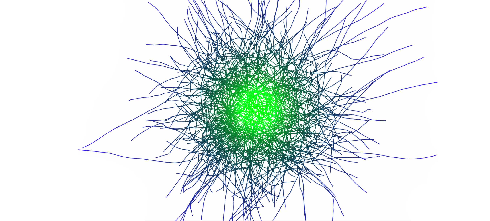
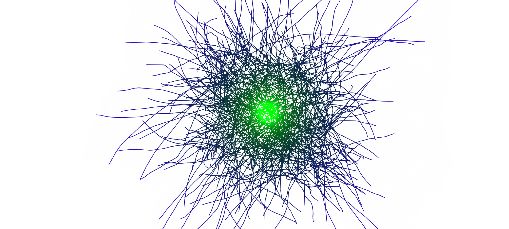
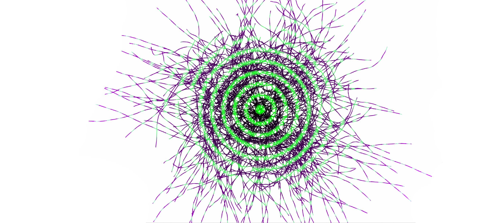

Random Walker Colors
Definition
In this exercise, 500 walkers are defined by random trajectories. The walker paths are represented by colors.
Model
The algorithm is very simple and consist to pass the information from one point to another in order to create a pseudo random direction.
//set a new random point
ptB.X = ptB.X + (Random.value - 0.5f) * 0.2f;
ptB.Y = ptB.Y + (Random.value - 0.5f) * 0.2f;
//add the X and Y coordinate data to the existent point to define a new point: ptC
ptC.X = ptA.X + ptB.X;
ptC.Y = ptA.Y + ptB.Y;
Code
The same code runs 500 times per each walker. the result is similar to a nest that change color in relation to the distance to the screen centre.
using UnityEngine;
using LagaUnity;
public class drawlines : MonoBehaviour
{
// Start is called before the first frame update
void Start()
{
for (int j = 0; j < 500; j++)
{
ptA = new Point(Random.Range(-50, 50), Random.Range(-50, 50), -1);
ptB = new Point(Random.value - step, Random.value - step, -1);
ptC = new Point(0, 0, -1);
for (int i = 0; i < 100; i++)
{
ptB.X = ptB.X + (Random.value - 0.5f) * 0.2f;
ptB.Y = ptB.Y + (Random.value - 0.5f) * 0.2f;
ptC.X = ptA.X + ptB.X;
ptC.Y = ptA.Y + ptB.Y;
pos = Mathf.Abs(map(ptA.DistanceTo(new Point(0,0,0)), 0, 160, 0.0f, 1.0f));
clr = new Color(0.2f*pos, 0.1f/pos, pos);
Line.DrawLine(ptA, ptC, 0.5f, clr);
ptA.X = ptC.X;
ptA.Y = ptC.Y;
}
}
float map(float s, float a1, float a2, float b1, float b2)
{
return b1 + (s - a1) * (b2 - b1) / (a2 - a1);
}
}
}
Results

Parameters:
clr = new Color(0.2f*pos, 0.1f/pos, pos)

Parameters:
clr = new Color(0.2f * pos, 0.05f / pos, pos)

Parameters:
clr = new Color(0.8f * pos, Mathf.Sin(100*pos), pos);